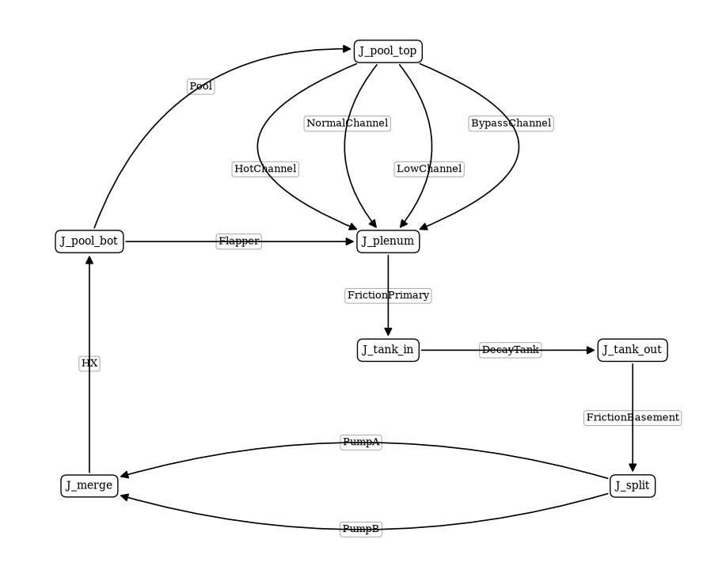

Building the Pool Reactor Loop¶
This page builds the pool reactor of the loss-of-flow examples by hand, one part at a time: the core, the junctions with the pool and the flapper, the pipes, the decay tank and the two pump legs, the flow graph that joins them, the fuel plates on their channels, a first steady solve, and finally the point kinetics. Every cell calls the library’s constructors with the arguments the shipped example uses, so the loop built here is the same loop.
The example package stream.examples.lofa does all of this in one call, build, and the next pages use that call. This page shows what is behind it, in the order one would put a system like this together.

The loop the page builds, in elevation: seven junctions, twelve edges, the pool as the free surface.
[1]:
from functools import partial
import matplotlib.pyplot as plt
import numpy as np
from matplotlib import rc
rc("font", family="serif", size=15)
from stream.aggregator import CalculationGraph
from stream.analysis.report import report
from stream.calculations import (
Bend,
Channel,
CheckValve,
Flapper,
Friction,
Gravity,
HeatExchanger,
Inertia,
Junction,
KirchhoffWDerivatives,
Pump,
)
from stream.calculations.flapper import continuously_differentiable_relaxation
from stream.calculations.point_kinetics import PointKineticsWInput, ReactivityController
from stream.composition import (
FlowGraph,
ResistorFromKnownPoint,
check_gravity_mismatch,
flow_edge,
point_kinetics_steady_state,
symmetric_plate,
)
from stream.examples.lofa import Params, build, draw, steady, steady_checks
from stream.examples.lofa.components import LowFlowTrip, horizontal_pressure
from stream.examples.lofa.params import (
BETA,
CORE,
FUEL_N,
GENERATION_TIME,
HEATED,
LAMBDA,
LENGTH,
PER_PLATE_REFERENCE,
PIPE1_DROP,
Z_N,
nominal_flows,
power_share,
)
from stream.examples.lofa.system import decay_heat, make_channel, make_fuel
from stream.physical_models.pressure_drop import pressure_diff
from stream.pipe_geometry import EffectivePipe
from stream.state import State
from stream.substances import light_water
from stream.units import g
from stream.utilities import identity
p = Params()
nominal = nominal_flows(p)
total = nominal["total"]
P0 = p.power * p.power_scale
print(f"core power {P0 / 1e6:.0f} MW, nominal core flow {total:.1f} kg/s")
core power 10 MW, nominal core flow 241.5 kg/s
Core channels and plates¶
The core has four groups of plates: one hot plate, 300 normal plates, 90 low-power plates and 10 wider unheated bypass channels. Plates of a group behave alike, so each group is modelled once: one channel and, for the heated groups, one plate. Later, in the flow graph, the group’s edge carries the plate count as its signify weight, so the junctions see one channel’s flow times the number of plates.
The example package provides two short constructors for the core. make_channel lays 10 axial cells along the 0.7 m plate, takes the channel’s geometry from plate_pipe (a rectangle 70 mm wide with the coolant gap as its depth, heated on both wide sides) and returns a ChannelAndContacts for a heated group, which exchanges heat with walls on both sides, or a plain Channel for the bypass. With p.friction == "regime" it gives the channel a friction factor that blends the laminar
and turbulent laws between Reynolds numbers 2000 and 5000. p.htc picks the wall heat-transfer law; the default, "regime", which composes laminar, turbulent and natural convection, is chosen because the transient ends in natural circulation. stop_at_saturation makes a heated channel end a transient with a named error once its coolant reaches saturation, the edge of what the single-phase model can describe.
make_fuel builds one plate as a Fuel: 10 axial cells, eight meat cells between two cladding cells on each side, and a cosine power shape along the plate. Its share scales that shape so the plate takes its fraction of the core power: the group’s peaking factor over the sum of plate count times peaking factor, \(1.6 / (1 \cdot 1.6 + 300 \cdot 1.0 + 90 \cdot 0.5)\) for the hot plate.
[2]:
channels = {
"hot": make_channel("HotChannel", p.gap_hot, True, p.friction, p.htc, p.stop_at_saturation),
"normal": make_channel("NormalChannel", CORE["normal"].gap, True, p.friction, p.htc, p.stop_at_saturation),
"low": make_channel("LowChannel", CORE["low"].gap, True, p.friction, p.htc, p.stop_at_saturation),
"bypass": make_channel("BypassChannel", CORE["bypass"].gap, False, p.friction, p.htc, p.stop_at_saturation),
}
fuels = {
"hot": make_fuel("HotFuel", share=power_share("hot")),
"normal": make_fuel("NormalFuel", share=power_share("normal")),
"low": make_fuel("LowFuel", share=power_share("low")),
}
print(channels["hot"].pipe)
print(f"hot plate share of the core power: {power_share('hot'):.5f}")
EffectivePipe(length=0.7, heated_perimeter=0.14, wet_perimeter=0.1444, area=0.00015400000000000003, heated_parts=(0.07, 0.07), width=0.07, depth=0.0022, heated_diameter=0.0044, hydraulic_diameter=0.004265927977839336)
hot plate share of the core power: 0.00462
Junctions, pool and flapper¶
Seven junctions hold the loop together: the top and bottom of the pool, the plenum under the core, the inlet and outlet of the decay tank, and the split and merge of the two pump legs.
The pool beside the core is a square column of water as tall as the core and holding 300 m³, so its side is about 21 m. It is a plain Channel with 10 cells, built from an EffectivePipe.rectangular square. Its edge will run from the pool bottom to the pool top, so positive flow in it goes upward; pressure_diff, the channels’ pressure law, takes positive flow as downward, so the pool gets it with gravity reversed.
The flapper joins the pool bottom to the plenum. It stays shut while the flow returning from the heat exchanger is above p.flapper_fraction (30 %) of the nominal core flow and opens below it, then behaves as a local loss of coefficient 5 over 0.05 m². A flapper stuck shut is modelled by an opening threshold no flow can reach.
The trip sensor LowFlowTrip is a calculation the example package adds: it watches the same returning flow, latches at 85 % of nominal, and half a second later inserts the rods, worth 10 dollars, over one second. Its worth is given in absolute reactivity, the dollars times the total delayed-neutron fraction.
[3]:
j_top, j_plenum, j_bot = Junction(name="J_pool_top"), Junction(name="J_plenum"), Junction(name="J_pool_bot")
j_tank_in, j_tank_out = Junction(name="J_tank_in"), Junction(name="J_tank_out")
j_split, j_merge = Junction(name="J_split"), Junction(name="J_merge")
pool_edge = np.sqrt(p.pool_volume * p.pool_area_scale / LENGTH)
pool = Channel(
z_boundaries=np.linspace(0.0, LENGTH, 11),
fluid=light_water,
pipe=EffectivePipe.rectangular(length=LENGTH, edge1=pool_edge, edge2=pool_edge, heated_edge=pool_edge),
pressure_func=partial(pressure_diff, g=-g),
name="Pool",
)
flapper = Flapper(
open_at_current=(-1e9 if p.flapper_stuck else p.flapper_fraction * total),
f=p.flapper_f,
fluid=light_water,
area=p.flapper_area,
open_rate=1.0,
stop_on_open=False,
relaxation=continuously_differentiable_relaxation,
name="Flapper",
)
trip = LowFlowTrip(
threshold=p.trip_threshold * total,
delay=p.trip_delay,
worth=p.rod_worth_dollars * float(np.sum(BETA)),
duration=p.rod_duration,
name="Trip",
)
print(f"pool side {pool_edge:.1f} m, flapper opens below {p.flapper_fraction * total:.1f} kg/s, trip at {p.trip_threshold * total:.1f} kg/s")
pool side 20.7 m, flapper opens below 72.5 kg/s, trip at 205.3 kg/s
Pipes, tank and pump legs¶
The library has no single pipe constructor; a pipe is a Friction for its wall friction, one Bend per elbow, and a Gravity for its change of height. The function below assembles those three for a 0.4 m pipe; it is the same as the example package’s private helper _pipe_parts. Three pipes use it: the primary pipe from the plenum down 4.3 m to the decay tank, with two elbows; the basement pipe down the remaining 3 m to the pumps, with one; and the riser, 7.3 m back up from the heat
exchanger to the pool bottom, with two. A positive disposition is a drop along the flow, so the riser’s is negative.
The decay tank holds 20 m³ in a horizontal square column 5 m long; horizontal_pressure is pressure_diff without gravity.
Each pump leg is four components in series. The Pump imposes half the nominal core flow and leaves its head to the solve. A ResistorFromKnownPoint gives the pump its curve: a parabolic loss that takes 60 % of the estimated loop head at the nominal leg flow, so the head falls as the flow rises. The Inertia is the flywheel, which carries the flow on after the pump loses its drive. The library’s CheckValve is a quadratic loss forward and a hundred thousand times stiffer backward, so
a stopped leg does not carry reverse flow.
The heat exchanger returns the water at 38 °C, and a second ResistorFromKnownPoint gives it its 0.5 bar loss at the nominal core flow.
[4]:
def pipe_parts(tag, length, drop, bends):
area = np.pi * p.pipe_diameter**2 / 4
parts = [Friction(f=p.pipe_friction, fluid=light_water, length=length, hydraulic_diameter=p.pipe_diameter,
area=area, name=f"Friction{tag}")]
parts += [Bend(fluid=light_water, hydraulic_diameter=p.pipe_diameter, area=area, bend_radius=1.5 * p.pipe_diameter,
bend_angle=np.pi / 2, name=f"Bend{tag}{i}") for i in range(bends)]
parts.append(Gravity(fluid=light_water, disposition=drop, name=f"Gravity{tag}"))
return parts
primary = pipe_parts("Primary", PIPE1_DROP, PIPE1_DROP, 2)
basement = pipe_parts("Basement", p.basement_drop - PIPE1_DROP, p.basement_drop - PIPE1_DROP, 1)
tank_length = 5.0
tank_edge = np.sqrt(p.tank_volume * p.tank_volume_scale / tank_length)
tank = Channel(
z_boundaries=np.linspace(0.0, tank_length, 6),
fluid=light_water,
pipe=EffectivePipe.rectangular(length=tank_length, edge1=tank_edge, edge2=tank_edge, heated_edge=tank_edge),
pressure_func=horizontal_pressure(),
name="DecayTank",
)
pumps = {leg: Pump(mdot0=total / 2, name=f"Pump{leg}") for leg in "AB"}
pump_curves = {leg: ResistorFromKnownPoint(dp=-p.pump_droop * p.pump_head_estimate, mdot=total / 2, behavior="parabolic",
fluid=light_water, Tin=p.hx_outlet, name=f"PumpCurve{leg}") for leg in "AB"}
flywheels = {leg: Inertia(inertia=p.inertia * p.inertia_scale, name=f"Flywheel{leg}") for leg in "AB"}
valves = {leg: CheckValve(k_forward=p.valve_k, reverse_ratio=p.valve_reverse_ratio, name=f"Valve{leg}") for leg in "AB"}
hx = HeatExchanger(outlet=p.hx_outlet, name="HX")
hx_loss = ResistorFromKnownPoint(dp=-p.hx_dp, mdot=total, behavior="parabolic", fluid=light_water,
Tin=p.hx_outlet, name="HXLoss")
riser = pipe_parts("Riser", p.basement_drop, -p.basement_drop, 2)
print([c.name for c in primary + basement + riser])
['FrictionPrimary', 'BendPrimary0', 'BendPrimary1', 'GravityPrimary', 'FrictionBasement', 'BendBasement0', 'GravityBasement', 'FrictionRiser', 'BendRiser0', 'BendRiser1', 'GravityRiser']
The flow graph¶
FlowGraph takes the edges of the network, each a flow_edge from one junction to another with its components in series, and builds the Kirchhoff calculation that holds every edge’s flow and every junction’s pressure. An edge’s direction is the direction of positive flow: the four core edges run from the pool top down to the plenum, each weighted by its plate count; the pool runs from its bottom up to its top; the flapper from the pool bottom to the plenum; then the primary pipe, the tank,
the basement pipe, the two pump legs in parallel and the heat exchanger with the riser back to the pool bottom. That last edge also names the flapper and the trip in ref_mdot_for: the flow they watch is the riser’s.
The keywords say the rest. inertial_comps lists the components whose flow has inertia, the flywheels, the channels, the pool and the tank, and KirchhoffWDerivatives gives each of them a flow-derivative equation. abs_pressure_comps hands the heated channels the absolute pressure, which their saturation temperature needs. funcs gives the flapper and the trip the clock. The pressure is pinned at the pool top, at the surface pressure plus the weight of 8 m of water at 38 °C.
check_gravity_mismatch sums the gravity heads around every closed loop of the graph at zero flow and uniform temperature, and raises if one does not close: a typo in a height shows up here rather than as a phantom flow later. It is silent for this loop. draw then shows the graph object FlowGraph built, laid out like the loop above: the junctions and, on each edge, its first component, with each arrow pointing the way positive flow runs.
[5]:
p_ref = p.p_surface + float(light_water.density(p.hx_outlet)) * g * p.core_depth
fg = FlowGraph(
flow_edge((j_top, j_plenum), channels["hot"], signify=float(CORE["hot"].plates)),
flow_edge((j_top, j_plenum), channels["normal"], signify=float(CORE["normal"].plates)),
flow_edge((j_top, j_plenum), channels["low"], signify=float(CORE["low"].plates)),
flow_edge((j_top, j_plenum), channels["bypass"], signify=float(CORE["bypass"].plates)),
flow_edge((j_bot, j_top), pool),
flow_edge((j_bot, j_plenum), flapper),
flow_edge((j_plenum, j_tank_in), *primary),
flow_edge((j_tank_in, j_tank_out), tank),
flow_edge((j_tank_out, j_split), *basement),
flow_edge((j_split, j_merge), pumps["A"], pump_curves["A"], flywheels["A"], valves["A"]),
flow_edge((j_split, j_merge), pumps["B"], pump_curves["B"], flywheels["B"], valves["B"]),
flow_edge((j_merge, j_bot), hx, hx_loss, *riser, ref_mdot_for=(flapper, trip)),
inertial_comps=[*flywheels.values(), *channels.values(), pool, tank],
k_constructor=KirchhoffWDerivatives,
abs_pressure_comps=[channels[k] for k in HEATED],
funcs={flapper: {"t": identity}, trip: {"t": identity}},
reference_node=(j_top, p_ref),
)
K = fg.kirchhoff
check_gravity_mismatch(K)
print(f"pressure at the pool top: {p_ref / 1e5:.4f} bar")
draw(K)
plt.show()
pressure at the pool top: 1.7916 bar

Plates on channels¶
The flow graph knows the channels but not the plates. symmetric_plate couples a channel to its plate as if each surrounded the other on both sides, which is how a channel between two identical plates sees them: the plate heats the channel through both walls, and the channel cools both faces of the plate. For the thermal-hydraulic steady state each plate is fed a constant power, the full core power, of which its share keeps its own fraction. Adding the three plate graphs to the flow
graph’s aggregator gives the complete thermal-hydraulic system, and report lists every calculation with its equations and the inputs that are left unset or provided by external functions. The column to look at is Missing: an input there has no source and no default, and the solve would fail or, worse, run on a value nobody chose. For this loop the column is empty. The Unset inputs fall back on what their calculations were built with: the bypass, the pool and the decay tank have no
walls to exchange heat with, the plates’ ends are insulated, and each pump imposes the flow it was built with and leaves its head for the solve to find. Set externally are the plates’ power and the clocks of the flapper and the trip.
[6]:
agr = fg.aggregator
for k in HEATED:
agr = agr + symmetric_plate(channels[k], fuels[k], funcs={fuels[k]: {"power": P0}}).to_aggregator()
report(agr)
Contains 620 Equations, 40 Nodes, 150 Edges.
Calculation |
Type |
Equation No. |
Unset |
Set Externally |
Missing |
|---|---|---|---|---|---|
J_pool_top |
Junction |
0 - 1 |
|||
HotChannel |
ChannelAndContacts |
1 - 32 |
|||
J_plenum |
Junction |
32 - 33 |
|||
NormalChannel |
ChannelAndContacts |
33 - 64 |
|||
LowChannel |
ChannelAndContacts |
64 - 95 |
|||
BypassChannel |
Channel |
95 - 106 |
T_left, T_right, h_left, h_right |
||
FrictionPrimary |
Friction |
106 - 108 |
|||
BendPrimary0 |
Bend |
108 - 110 |
|||
BendPrimary1 |
Bend |
110 - 112 |
|||
GravityPrimary |
Gravity |
112 - 114 |
|||
J_tank_in |
Junction |
114 - 115 |
|||
J_pool_bot |
Junction |
115 - 116 |
|||
Pool |
Channel |
116 - 127 |
T_left, T_right, h_left, h_right |
||
Flapper |
Flapper |
127 - 129 |
t |
||
DecayTank |
Channel |
129 - 135 |
T_left, T_right, h_left, h_right |
||
J_tank_out |
Junction |
135 - 136 |
|||
FrictionBasement |
Friction |
136 - 138 |
|||
BendBasement0 |
Bend |
138 - 140 |
|||
GravityBasement |
Gravity |
140 - 142 |
|||
J_split |
Junction |
142 - 143 |
|||
PumpA |
Pump |
143 - 145 |
pressure, mdot0 |
||
PumpCurveA |
Friction |
145 - 147 |
|||
FlywheelA |
Inertia |
147 - 149 |
|||
ValveA |
CheckValve |
149 - 151 |
|||
J_merge |
Junction |
151 - 152 |
|||
PumpB |
Pump |
152 - 154 |
pressure, mdot0 |
||
PumpCurveB |
Friction |
154 - 156 |
|||
FlywheelB |
Inertia |
156 - 158 |
|||
ValveB |
CheckValve |
158 - 160 |
|||
HX |
HeatExchanger |
160 - 162 |
|||
HXLoss |
Friction |
162 - 164 |
|||
FrictionRiser |
Friction |
164 - 166 |
|||
BendRiser0 |
Bend |
166 - 168 |
|||
BendRiser1 |
Bend |
168 - 170 |
|||
GravityRiser |
Gravity |
170 - 172 |
|||
Kirchhoff |
KirchhoffWDerivatives |
172 - 199 |
|||
Trip |
LowFlowTrip |
199 - 200 |
t |
||
HotFuel |
Fuel |
200 - 340 |
T_top, T_bottom, h_top, h_bottom |
power |
|
NormalFuel |
Fuel |
340 - 480 |
T_top, T_bottom, h_top, h_bottom |
power |
|
LowFuel |
Fuel |
480 - 620 |
T_top, T_bottom, h_top, h_bottom |
power |
A first solve¶
A steady solve needs a starting point, and for this loop a rough one is enough: every temperature at the heat-exchanger outlet, every pressure drop zero, heat-transfer coefficients of 1000 W/m²K, and flows set by the kind of edge: 0.5 kg/s through each core channel (one plate’s flow), the full core flow through the pool and the pipes, half of it through each pump leg, and nothing through the flapper. The Kirchhoff calculation’s flows and pressures are set on its own vector, which K.save
turns into a state, and K.component_edge names the edge a component sits on. This is the example package’s ballpark guess.
steady is solve_steady with the analytic algebraic Jacobian. steady_checks then compares the solution with estimates one can make by hand, the same checks the next page discusses: each heated channel’s outlet temperature against the energy balance, the flow split against the turbulent gap law, and the pump heads. It reads the components through a dictionary of references.
[7]:
non_kirchhoff = [n for n in agr.graph if n is not K]
k_vector = np.zeros(len(K))
k_vector[K.variables_by_type["mdot"]] = total
k_vector[K.variables_by_type["abs_pressure"]] = p_ref
k_state = K.save(k_vector)
for ch in channels.values():
k_state[K.component_edge(ch)] = PER_PLATE_REFERENCE
k_state[K.component_edge(pool)] = total
k_state[K.component_edge(flapper)] = 0.0
for leg in "AB":
k_state[K.component_edge(pumps[leg])] = total / 2
ballpark = State.merge(
State.uniform(non_kirchhoff, p.hx_outlet, "T_cool", "T", "T_wall_left", "T_wall_right", "Tin"),
State.uniform(non_kirchhoff, 1e3, "h_left", "h_right"),
State.uniform(non_kirchhoff, 0.0, "pressure", "flag"),
{K.name: k_state},
)
y_th = steady(agr, agr.load(ballpark))
refs = {"params": p, "channels": channels, "fuels": fuels, "pool": pool, "pumps": pumps, "power": P0}
chk = steady_checks(agr, K, refs, y_th)
print(f"core inlet temperature: {chk['T_in']:.2f} °C")
print(f"worst outlet temperature error: {chk['T_out_error_max']:.4f} K")
print(f"worst split error: {100 * chk['split_error_max']:.2f} %")
print(f"pool flow: {chk['pool_flow']:.1f} kg/s")
for leg, head in chk["heads"].items():
print(f"pump {leg} head: {head / 1e5:.3f} bar")
core inlet temperature: 38.00 °C
worst outlet temperature error: 0.0044 K
worst split error: 3.39 %
pool flow: 241.5 kg/s
pump A head: 1.278 bar
pump B head: 1.278 bar
Attaching the kinetics¶
The solve lands where the hand estimates put it: the outlet temperatures within about 0.004 K of the energy balance, the per-plate flows within about 3.4 % of the gap law, and both pumps at about 1.28 bar. With the thermal-hydraulics solved, the constant power gives way to point kinetics. PointKineticsWInput takes six delayed-neutron groups, a generation time of 50 µs, temperature feedback and a reactivity controller. The feedback is a reactivity per kelvin on every coolant cell and every
meat cell. The core’s coefficients, -1e-4 per K for the coolant and -2e-5 per K for the fuel, are split between the groups by plate count times peaking factor, and within a group evenly over its cells. The reference temperatures are the solved ones, so the feedback is zero at the operating point and the reactor starts critical. The controller reads the rods’ reactivity from the trip sensor.
The kinetics node is a single calculation, and its links are added by hand in a CalculationGraph: it reads the temperatures T of the heated channels and plates and feeds each plate its power. Besides the fission power it takes a power_input, the decay heat, which counts from the trip; at the operating point it is 6.6 % of the power. The plates are attached with symmetric_plate again, this time without a constant power, and the new graph is added to the same flow graph’s
aggregator.
[8]:
st_th = agr.save(y_th)
weight_sum = sum(grp.plates * grp.factor for grp in CORE.values())
temp_worth, ref_temp = {}, {}
for k in HEATED:
fraction = p.feedback_scale * CORE[k].plates * CORE[k].factor / weight_sum
temp_worth[channels[k]] = np.full(Z_N, p.coolant_worth * fraction / Z_N)
temp_worth[fuels[k]] = np.full(Z_N * FUEL_N, p.fuel_worth * fraction / (Z_N * FUEL_N))
ref_temp[channels[k]] = np.asarray(st_th[channels[k].name]["T_cool"], dtype=float).copy()
meat = np.asarray(fuels[k].meat, dtype=bool).reshape(-1)
ref_temp[fuels[k]] = np.asarray(st_th[fuels[k].name]["T"]).reshape(-1)[meat]
controls = ReactivityController(input_reactivity=lambda state, t_state, t: trip.rho(t))
pk = PointKineticsWInput(generation_time=GENERATION_TIME, delayed_neutron_fractions=BETA,
delayed_groups_decay_rates=LAMBDA, temp_worth=temp_worth, ref_temp=ref_temp,
controls=controls, name="PK")
dh = decay_heat(P0)
kinetics = CalculationGraph.from_decoupled(
pk, funcs={pk: {"t": identity, "power_input": lambda t: dh(max(t - trip.t_trip, 0.0))}})
for k in HEATED:
kinetics = kinetics + symmetric_plate(channels[k], fuels[k])
kinetics.graph.add_edge(channels[k], pk, variables=("T",))
kinetics.graph.add_edge(fuels[k], pk, variables=("T",))
kinetics.graph.add_edge(pk, fuels[k], variables=("power",))
agr_k = fg.aggregator + kinetics.to_aggregator()
y = agr_k.load(State.merge(st_th, point_kinetics_steady_state(pk, P0, power_input=dh(0.0))))
pk_state = agr_k.save(y, t=0.0)["PK"]
print(f"power: {float(pk_state['power']) / 1e6:.3f} MW")
print(f"decay heat: {dh(0.0) / 1e6:.3f} MW")
print(f"reactivity: {float(pk_state['reactivity']):.1e}")
print(f"steady residual: {np.linalg.norm(agr_k.compute(y, 0.0)):.1e}")
power: 10.000 MW
decay heat: 0.660 MW
reactivity: 0.0e+00
steady residual: 1.7e-07
The same loop as build¶
The kinetics node reads the full 10 MW, of which 0.66 MW is decay heat, at zero reactivity, and the residual of about 2e-7 is what the steady solve left. agr_k and y are the system and state operating_point produces for these parameters, and build(p, kinetics=True, ref_state=st_th) builds the same system in one call. The check below builds it that way and compares: the two aggregators lay out the same calculations, by name, on the same slices of the state vector, and the state
solved on this page, loaded into the one from build, leaves it the same steady residual. From here on the examples use build and operating_point; the next page, A Pool Reactor for Loss-of-Flow Analysis, takes the operating point apart and checks it.
[9]:
agr_ref, _, _ = build(p, kinetics=True, ref_state=st_th)
same_layout = [(c.name, s) for c, s in agr_k.sections.items()] == [(c.name, s) for c, s in agr_ref.sections.items()]
y_ref = agr_ref.load(agr_k.save(y))
print(f"same layout: {same_layout}")
print(f"steady residual here {np.linalg.norm(agr_k.compute(y, 0.0)):.3e}, in build's {np.linalg.norm(agr_ref.compute(y_ref, 0.0)):.3e}")
same layout: True
steady residual here 1.715e-07, in build's 1.715e-07
Where the numbers come from¶
The reactor of these examples is a generic open-pool reactor of the MTR class, not a particular plant. Its loop is the layout the loss-of-flow literature on such reactors describes: forced flow down through the core, flappers between the plenum and the pool, the pool as the heat sink, a decay tank, two pump legs with flywheels and check valves, a heat exchanger and a riser back to the pool. The numbers are illustrative values for a 10 MW reactor of that class, chosen so that one loop behaves sensibly in every scenario of these pages, not read off a plant. The table shows how they compare with published figures.
Quantity |
This case |
Published figure |
Where |
|---|---|---|---|
Core power |
10 MW |
the IAEA benchmark reactor is a 10 MW plate-type MTR |
IAEA 10 MW benchmark (Aziz 2011; defined in IAEA-TECDOC-233) |
Fuel plates |
391 heated plates in three groups, about 17 elements of 23 plates, plus a bypass group of 10 unheated channels |
standard element 23 plates, control element 17 plates (HEU core) |
Aziz 2011; TECDOC-467 gives “23, some less” |
Coolant gap |
2.2 mm |
2.19 mm (HEU core), 2.217 mm (LEU core) |
Aziz 2011 |
Plate |
0.7 m by 70 mm, meat 0.6 mm, cladding 0.5 mm |
meat 600 mm long (a few up to 800 mm), 60 or 62.8 mm wide, 0.51 mm thick (a few 0.76 mm); plate 1.27 mm; cladding specified as 0.38 mm; element 7.71 cm by 8.1 cm with 60 cm active length |
TECDOC-467; Aziz 2011 |
Core inlet temperature |
38 °C |
ETRR-2: 40 °C; TR-2: 17 to 29.5 °C |
Doval and Abdou 1999; Sevdik et al. 2007 |
Primary flow |
about 242 kg/s, about 880 m³/h, at 10 MW |
ETRR-2: 1900 m³/h at 22 MW; TR-2: 750 m³/h at 5 MW |
Doval and Abdou 1999; Sevdik et al. 2007 |
Low-flow trip |
85 % of nominal flow, 0.5 s delay, about 2.5 s into the coastdown |
ETRR-2: 90 % of nominal, no delay assumed in the simulation; TR-2: flow scram 7 to 9 s after the flow starts to fall |
Doval and Abdou 1999; Sevdik et al. 2007 |
Flapper opening |
30 % of nominal flow, about 29 s after the pumps start to lose head |
ETRR-2: 68 s simulated, 75 to 76 s measured; TR-2: 25 to 35 s |
Doval and Abdou 1999; Sevdik et al. 2007 |
Decay tank |
20 m³, about 80 s of transit at nominal flow |
TR-2: 22 m³, 3 min |
Sevdik et al. 2007 |
Saturation reference |
core top, about 1.8 bar, saturation at about 117 °C |
ETRR-2: 120 °C at 2.0 bar |
Doval and Abdou 1999 |
Other values have no public counterpart here and were sized for this loop: the pool volume, the pipe diameter and elevations, the pump head and droop, the flywheel inertance (sized so the flow halves about 13 s after the pumps lose their head), the check-valve coefficients, the rod worth and insertion time, and the two feedback coefficients. The sweep in benchmarks/lofa_pool, which varies several of them, exists partly because these are choices.
References
IAEA-TECDOC-467, Standardization of specifications and inspection procedures for LEU plate-type research reactor fuels, IAEA, Vienna, 1988. https://www-pub.iaea.org/MTCD/publications/PDF/te_467_prn.pdf
Aziz, Neutronic analysis for the conversion of IAEA 10 MW research reactor from HEU to LEU, International Conference on Research Reactors: Safe Management and Effective Utilization, IAEA, 2011. https://www-pub.iaea.org/MTCD/publications/PDF/P1575_CD_web/datasets/presentations/Session%20B/B14%20Aziz%20Egypt.pdf
IAEA-TECDOC-233, Research reactor core conversion from the use of highly enriched uranium to the use of low enriched uranium fuels: guidebook, IAEA, Vienna, 1980 (the document that defines the 10 MW benchmark; its figures are quoted here through Aziz 2011).
Doval and H. Abdou, Loss of flow incident: simulation and measurements in the MPR, IGORR 7, 1999. https://www.igorr.com/_media/proceedings:1999_igorr7:ps2_doval.pdf
Sevdik, T. Türker, S. Taylan and O. Uzonur, Experimental measurements for plate temperatures of MTR fuel elements at sudden loss-of-flow accident and comparison with computed results, International Conference on Research Reactors, IAEA, 2007. https://www-pub.iaea.org/MTCD/Publications/PDF/P1360_ICRR_2007_CD/papers/B.%20Sevdik.pdf